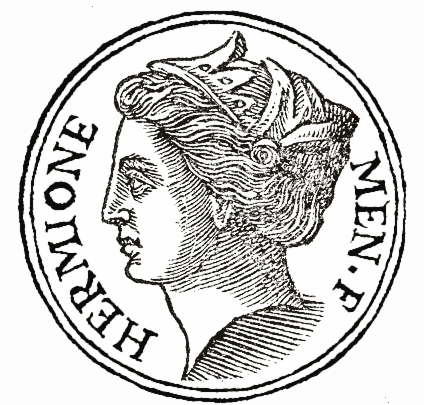
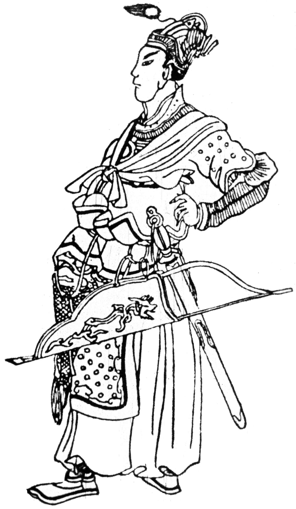

ხატვა არის ადამიანის საქმიანობისა და შემოქმედების მრავალფეროვანი სპექტრი, რომელიც გამოხატავს წარმოსახვით ან ტექნიკურ უნარს. იგი მოიცავს სხვადასხვა ფორმებს, მათ შორის ვიზუალურ ხელოვნებას, როგორიცაა ფერწერა, ქანდაკება და ფოტოგრაფია; საშემსრულებლო ხელოვნება, როგორიცაა მუსიკა, თეატრი და ცეკვა; და ლიტერატურული ხელოვნება, როგორიცაა პოეზია და პროზა. ხელოვნება მრავალ მიზანს ემსახურება: მას შეუძლია იდეების გადმოცემა, ემოციების აღძვრა ან ესთეტიკური სიამოვნების მინიჭება. ისტორიის მანძილზე ხელოვნება იყო კულტურული, სოციალური და პოლიტიკური კონტექსტების ასახვა, ხშირად საზღვრებს სცილდება და ართულებს აღქმებს. ეს არის ადამიანის კულტურისა და შემოქმედების ფუნდამენტური ასპექტი, რომელიც მუდმივად ვითარდება და გავლენას ახდენს ცხოვრების ყველა ასპექტზე.
 